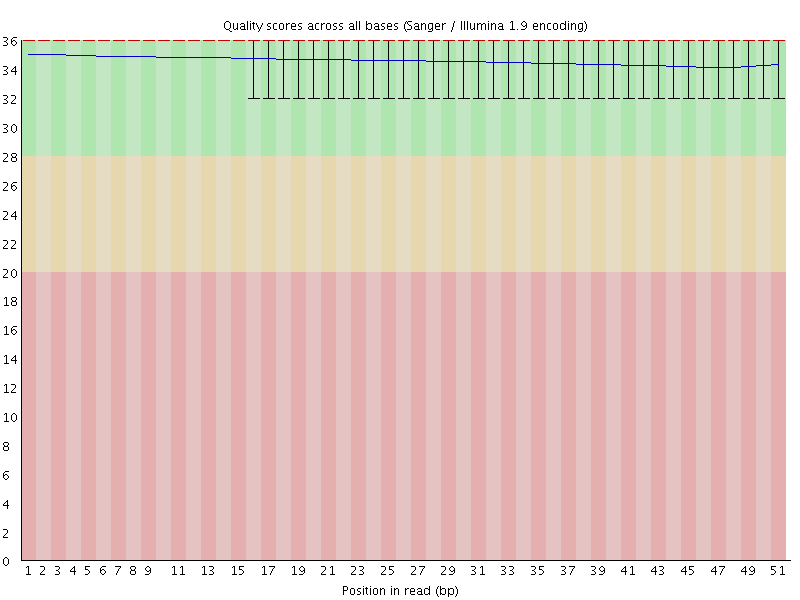
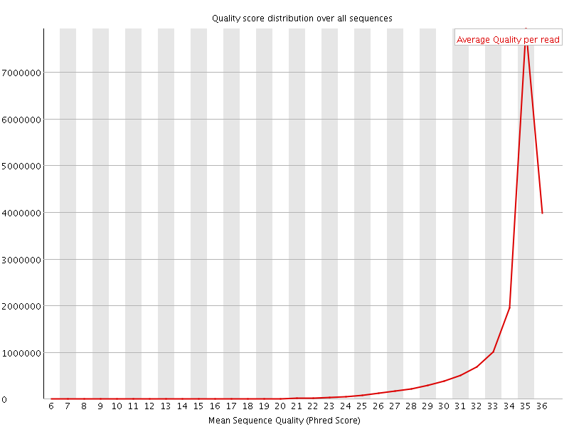
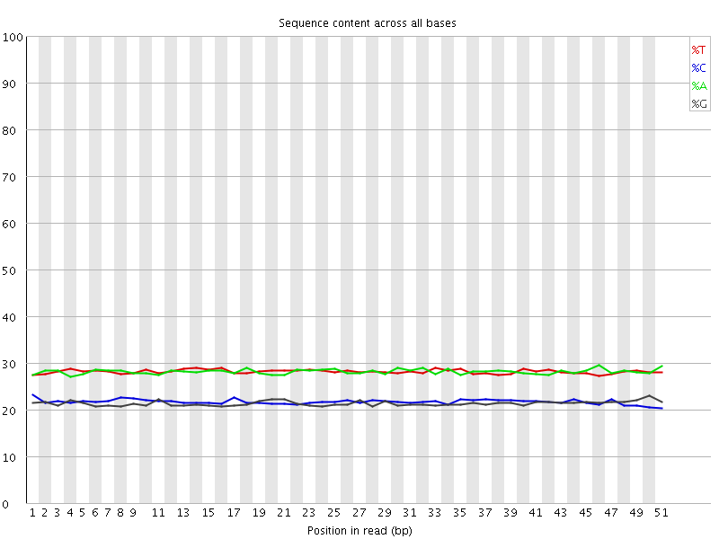
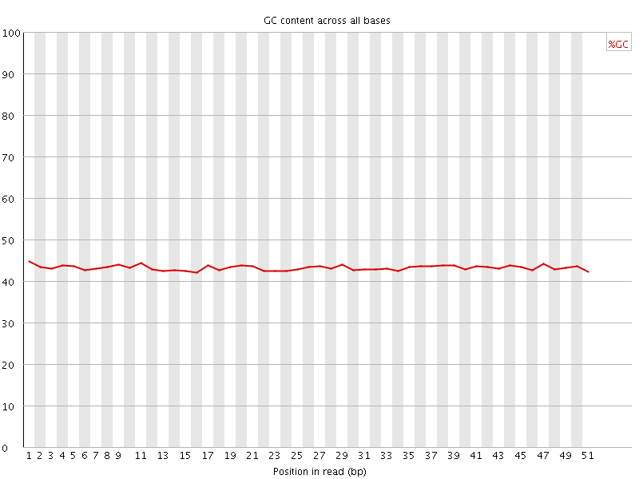
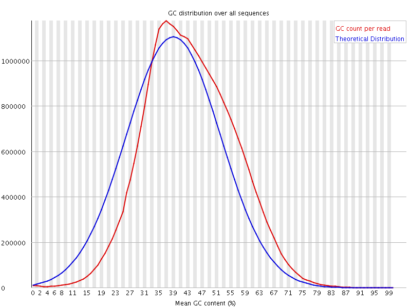
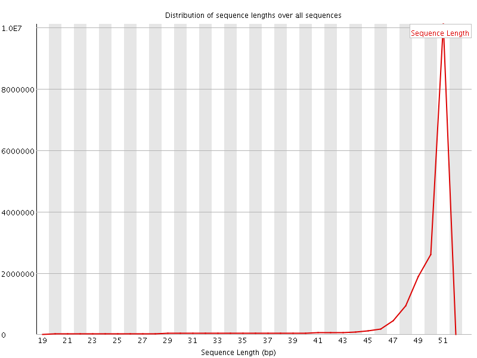
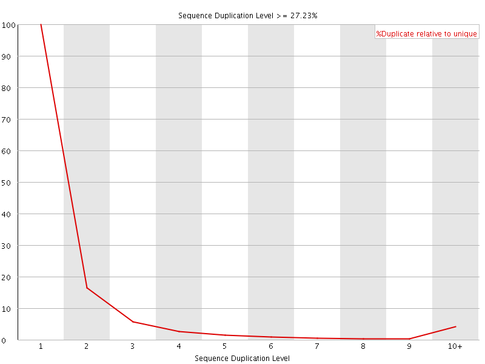
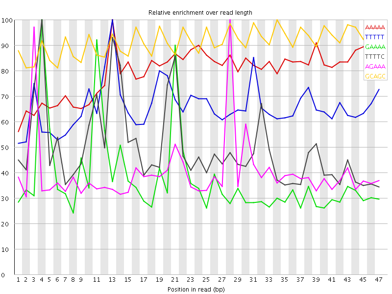

![[OK]](Icons/tick.png) Basic Statistics
Basic Statistics
| Measure | Value |
|---|---|
| Filename | 030-F0_S1_L003_R1_001_trimmed.fq.gz |
| File type | Conventional base calls |
| Encoding | Sanger / Illumina 1.9 |
| Total Sequences | 17532787 |
| Filtered Sequences | 0 |
| Sequence length | 20-51 |
| %GC | 43 |
Per base sequence quality

Per sequence quality scores

Per base sequence content

Per base GC content

![[WARN]](Icons/warning.png) Per sequence GC content
Per sequence GC content

Per base N content

Sequence Length Distribution

Sequence Duplication Levels

Overrepresented sequences
| Sequence | Count | Percentage | Possible Source |
|---|---|---|---|
| CAAGAAAACTGAAAATCATGGAAAATGAGAAACATCCACTTGACGACTTGA | 18725 | 0.1067999057993461 | No Hit |
Kmer Content

| Sequence | Count | Obs/Exp Overall | Obs/Exp Max | Max Obs/Exp Position |
|---|---|---|---|---|
| AAAAA | 5898910 | 4.1025934 | 5.1488433 | 13 |
| TTTTT | 5896180 | 4.094069 | 6.210149 | 13 |
| GAAAA | 3509865 | 3.2136798 | 8.526029 | 4 |
| TTTTC | 3564050 | 3.2035165 | 6.415994 | 4 |
| AGAAA | 3404295 | 3.1170185 | 7.79043 | 28 |
| GCAGC | 1507980 | 3.044036 | 3.3333712 | 34 |
| CCAGG | 1454680 | 2.9364436 | 5.67518 | 35 |
| AAGAA | 2814670 | 2.5771499 | 5.4266453 | 2 |
| GGAAA | 2009120 | 2.4218295 | 8.4571905 | 20 |
| GAGAA | 1996485 | 2.406599 | 8.751622 | 27 |
| AAAAT | 3247705 | 2.2579944 | 5.898963 | 22 |
| GGTGG | 1062860 | 2.2198534 | 5.4088993 | 18 |
| TCCTC | 1467045 | 2.209653 | 5.545525 | 24 |
| GAGGA | 1388910 | 2.2041302 | 5.201494 | 2 |
| CCACC | 1119135 | 2.1827414 | 6.2374187 | 8 |
| TGGAA | 1788940 | 2.155723 | 5.9402213 | 19 |
| TGAAA | 2208415 | 2.0214007 | 6.775568 | 10 |
| TTCAG | 1700600 | 2.013686 | 5.3827496 | 15 |
| CTGAA | 1683665 | 1.994278 | 7.970344 | 9 |
| TCCAC | 1307500 | 1.9699843 | 5.6795316 | 35 |
| AAATG | 2151730 | 1.9695158 | 6.867804 | 23 |
| CATTT | 2127545 | 1.9129447 | 6.701695 | 1 |
| AAAAC | 2058035 | 1.852242 | 6.444198 | 5 |
| GTGGA | 1119460 | 1.7759522 | 6.162059 | 47 |
| TGAGA | 1466775 | 1.7675053 | 8.028518 | 26 |
| CCACT | 1096925 | 1.6527153 | 5.819229 | 36 |
| CATGG | 1042985 | 1.6264231 | 6.4288664 | 17 |
| CAAGA | 1305130 | 1.5464084 | 5.6987195 | 1 |
| AGTGG | 951715 | 1.5098356 | 5.6332226 | 46 |
| AATGA | 1635385 | 1.4968964 | 6.3130918 | 24 |
| ATGGA | 1234075 | 1.4870954 | 5.3595896 | 18 |
| CATCC | 984700 | 1.483628 | 5.2466464 | 33 |
| ATGAG | 1212615 | 1.4612354 | 7.691299 | 25 |
| CTTGA | 1213030 | 1.4363526 | 6.4442205 | 47 |
| CACTT | 1229530 | 1.4310721 | 6.8062344 | 37 |
| ACTGA | 1208065 | 1.4309363 | 7.2334957 | 8 |
| AACTG | 1203120 | 1.425079 | 7.190266 | 7 |
| AAACT | 1505315 | 1.354353 | 5.8669233 | 6 |
| AAATC | 1475800 | 1.3277979 | 6.06315 | 13 |
| AAGTG | 1091975 | 1.3158606 | 5.059012 | 47 |
| ACTTG | 1097745 | 1.2998434 | 5.408112 | 46 |
| AATCA | 1321920 | 1.1893501 | 5.8790236 | 14 |
| CCTCG | 442090 | 0.8769145 | 5.0453215 | 25 |